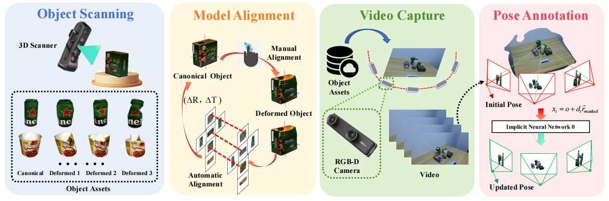
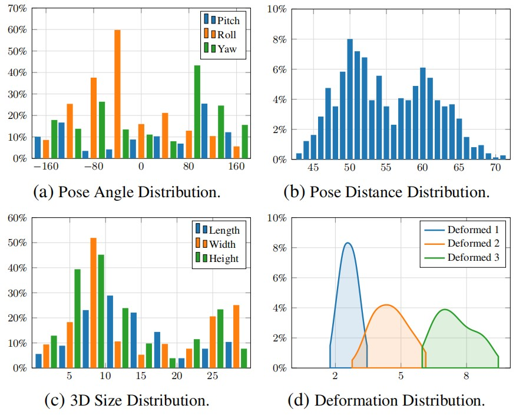
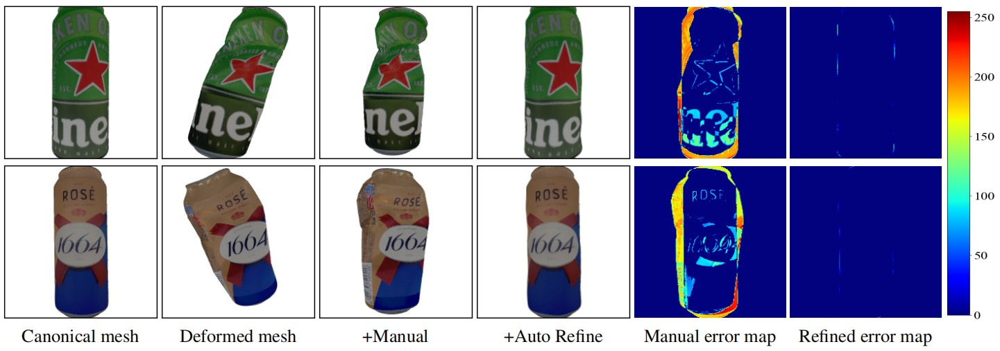
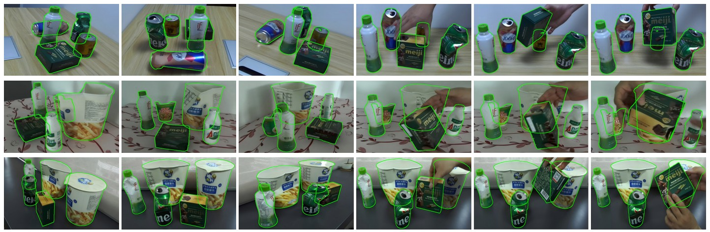
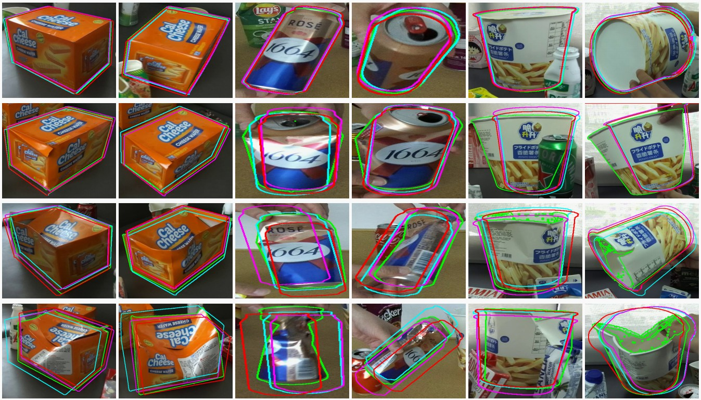
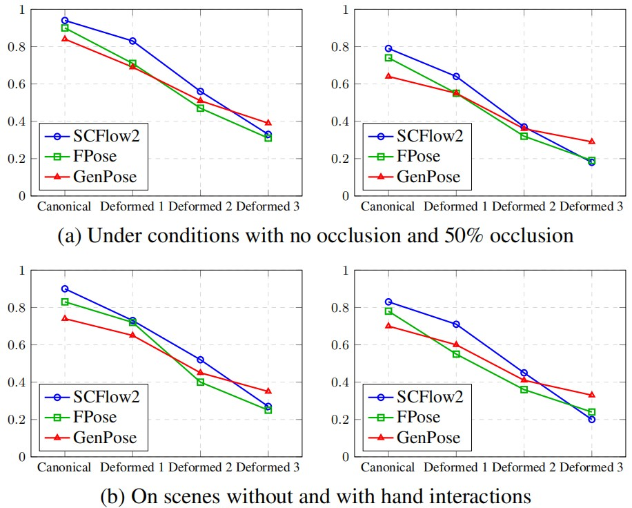

DeSOPE: Exploring 6D Object Pose Estimation with Deformation
Abstract
We present DeSOPE, a large-scale dataset for 6DoF deformed objects. Most 6D object pose methods assume rigid or articulated objects, an assumption that fails in practice as objects deviate from their canonical shapes due to wear, impact, or deformation. To model this, we introduce the DeSOPE dataset, which features high-fidelity 3D scans of 26 common object categories, each captured in one canonical state and three deformed configurations, with accurate 3D registration to the canonical mesh. Additionally, it features an RGB-D dataset with 133K frames across diverse scenarios and 665K pose annotations produced via a semi-automatic pipeline. We begin by annotating 2D masks for each instance, then compute initial poses using an object pose method, refine them through an object-level SLAM system, and finally perform manual verification to produce the final annotations. We evaluate several object pose methods and find that performance drops sharply with increasing deformation, suggesting that robust handling of such deformations is critical for practical applications.
Pipeline

Overview of the dataset generation framework. The framework consists of four main steps: Object Scanning, which acquires the canonical mesh of objects along with multiple deformed states of the same instance using a high-precision 3D scanner; Model Alignment, beginning with coarse manual alignment and followed by flow-driven 3D registration using SCFlow2; Video Capture, which records RGB-D videos of objects across diverse scenes with a stereo camera; and Pose Annotation, which performs initial object labeling and iteratively refines poses using implicit neural networks to obtain accurate annotations.
Scanned 3D Assets
Datasets Statistics

Statistical analysis of the DeSOPE dataset. All subplots show percentage (%) on the y-axis. (a) Camera pose angle distribution (x-axis: rotation angle in degrees) showing the coverage of pitch, roll, and yaw angles across all annotated frames. (b) Object-to-camera distance distribution (x-axis: distance in cm), with distances concentrated around 50cm. (c) Physical dimensions of 104 object instances across 26 categories (x-axis: size in cm), demonstrating diversity in object scales. (d) Deformation severity distribution (x-axis: deformation magnitude in cm) across three levels: mild (Deformed 1), moderate (Deformed 2), and severe (Deformed 3). Together, these statistics validate the comprehensive coverage of viewing angles, object scales, and deformation states in DeSOPE.
Registration Results

3D Registration between canonical mesh and deformed mesh. After the initial manual registration, the two meshes are roughly aligned but still imprecise. Using this manual registration as initialization, the matching-guided automatic refinement step produces a more accurate registration. Note that the reprojection error map after refinement is significantly improved compared to the manual initialization.
Annotation Results

Example of captured images and pose annotations. The green boundary contours in the figure represent the results of projecting the poses, obtained by the annotation algorithm proposed in this paper, onto the 2D space. It includes images from both static scenes and dynamic scenarios manipulated by humans.
Sota Results

Evaluating object pose methods on DeSOPE. The pose estimation results are projected onto the 2D plane using the undeformed canonical mesh applied during inference. Although most state-of-the-art estimators perform well on canonical meshes, their performance degrades significantly when the meshes exhibit deformations that deviate from the canonical state. Red: GenPose, Pink: FoundationPose, Cyan: SCFlow2.
Factors Affecting Performance

Performance analysis. All plots show Average Recall (AR) versus four deformation levels (Canonical to Deformed 3) for three methods: SCFlow2, FoundationPose (FPose), and GenPose. Top row: Effect of occlusion—left shows fully visible objects (mask\_visib = 1.0), right shows partial occlusion (mask\_visib = 0.5). Bottom row: Effect of scene type—left shows static scenes, right shows dynamic scenes with hand-object interaction. Key observations: (1) AR decreases as deformation severity increases across all conditions; (2) higher occlusion leads to lower performance; (3) dynamic scenes consistently underperform static scenes due to motion blur and occlusions during manipulation.
BibTeX
@article{DeSOPE2026,
title={Exploring 6D Object Pose Estimation with Deformation},
author={Zhiqiang Liu, Rui Song, Duanmu Chuangqi, Jiaojiao Li, David Ferstl, Yinlin Hu},
journal={In Proceedings of the IEEE/CVF Conference on Computer Vision and Pattern Recognition},
year={2026},
url={https://desope-6d.github.io/}
}